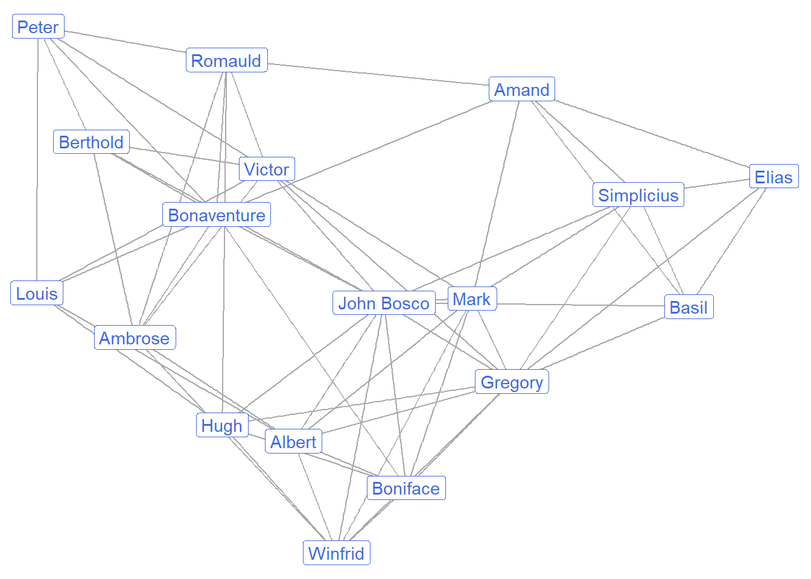
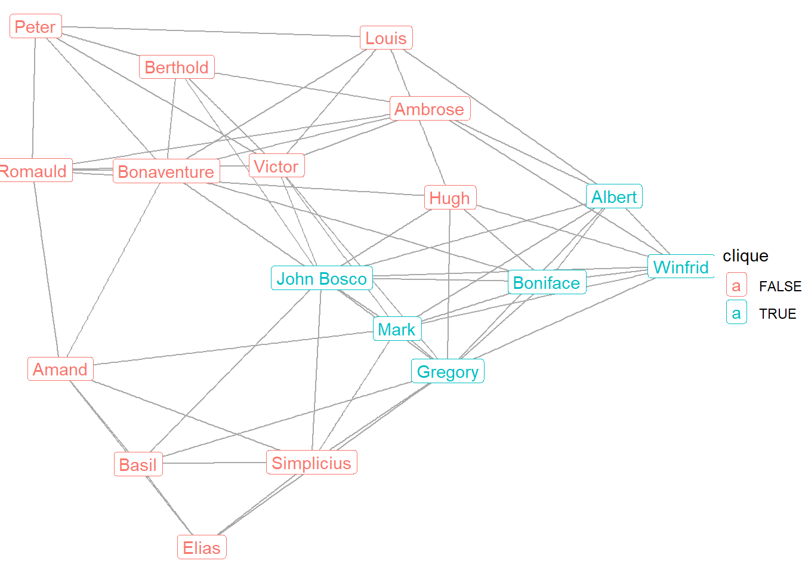
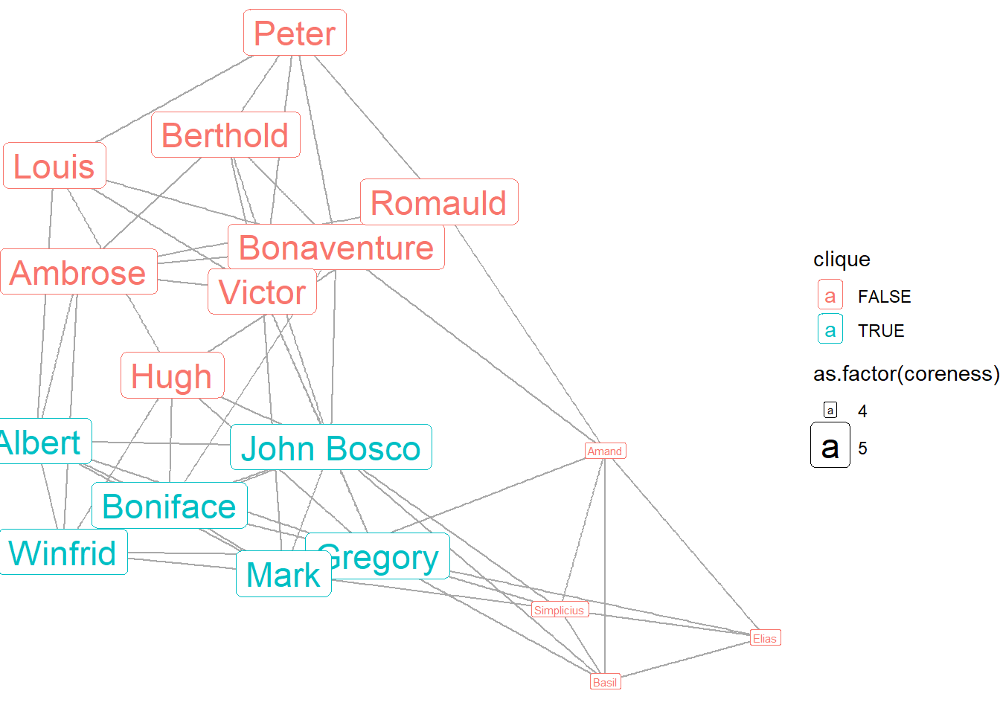
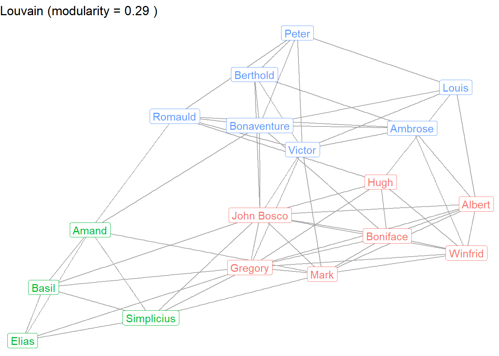
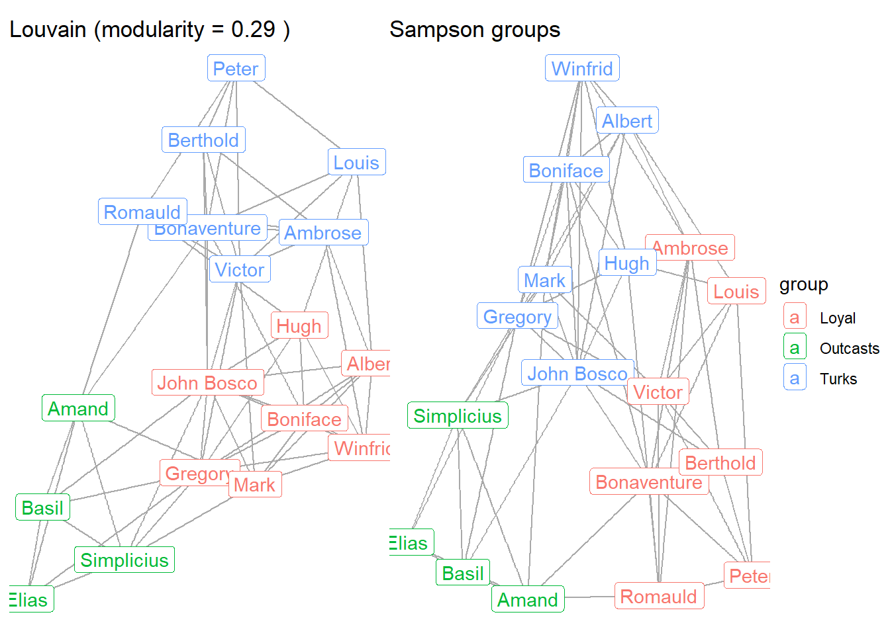
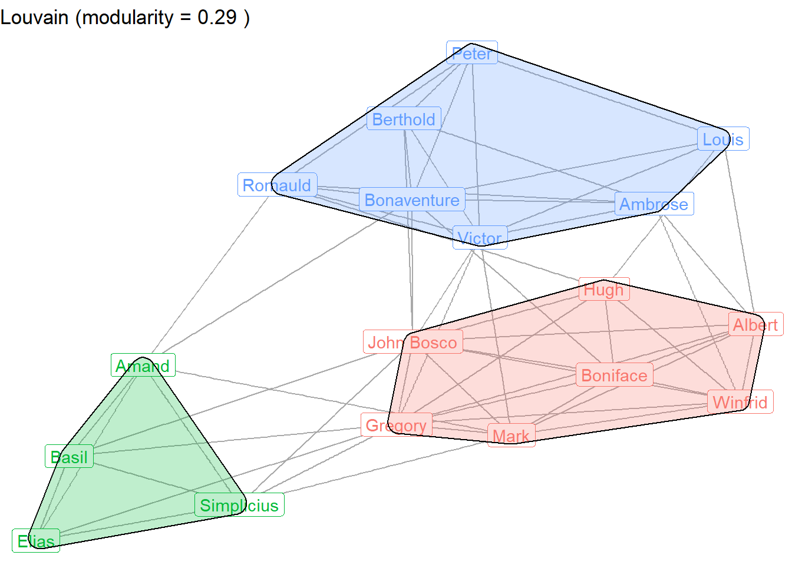

library(intronets)
library(igraph)
library(ggraph)
library(dplyr)
library(patchwork)
library(ggforce)7 Communities
When examining a network graph, one of the first things people look for is elements of the graph that comprise subgroups. These subgroups are often comprised of nodes that are highly connected relative to the rest of the graph. By noting the different subgroups, we can learn something about how the people in the network see themselves and in interact with one another.
While the “eye-test” allows us to visually demarcate different subgroups or communities within a network, community detection can be better deduced through the use of a series of algorithms. We will explore some examples of this below. First it will be necessary to load a few R packages: igraph for conducting network analysis, ggraph for presenting the graphs, dplyr for manipulating the data, patchwork for presenting side-by-side graphs, and ggforce for drawing polygons.
7.1 Load network data
In the 1960s, a Cornell University PhD student, Samuel Franklin Sampson decided to conduct his dissertation research through the ethnographic study of monks in a Northeastern US monastery. He was interested in understanding and reporting on the social interactions among the monks. Interestingly enough, the monks had a falling out during his data collection period which resulted in several monks being expelled from the monastery!
We will use the network data that Sampson collected to detect clusters and communities among the cloistered. The code below loads the data.
load_nets("sampson.rda")
sampsonIGRAPH 8399fc3 U--- 18 60 --
+ attr: cloisterville (v/l), group (v/c), na (v/l), vertex.names (v/c)
+ edges from 8399fc3:
[1] 1-- 2 1-- 3 2-- 3 1-- 5 4-- 5 1-- 6 4-- 6 5-- 6 1-- 7 2-- 7
[11] 1-- 8 2-- 8 4-- 8 6-- 8 7-- 8 5-- 9 6-- 9 8-- 9 4--10 5--10
[21] 8--10 9--10 4--11 5--11 8--11 1--12 2--12 7--12 9--12 3--13
[31] 5--13 7--13 10--13 1--14 2--14 10--14 11--14 12--14 1--15 2--15
[41] 5--15 7--15 12--15 14--15 1--16 2--16 7--16 9--16 11--16 12--16
[51] 15--16 2--17 3--17 13--17 1--18 2--18 3--18 7--18 13--18 17--18We can see here that this network contains 18 monks and 60 friendship ties among them. Originally, Sampson asked the monks to rank order their friendships; the ties here represent being in the top-three friendships. The network has been coerced such that any top-three nomination is treated as a symmetric friendship relationship.
Let’s display the monk’s friendships. The graph below shows a fairly dense network with many overlapping friendships among the monks.
ggraph(sampson, layout = "fr") +
geom_edge_link(color = "darkgrey") +
geom_node_label(aes(label = vertex.names),
color = "royalblue") +
theme_void()
7.2 Cliques
Subgroups tend to be identified on the basis of cohesion, which is determined by dense connections among actors within a network. There are several ways to identify these communities. The most extreme way to define a subgroup is by identifying cliques – maximally connected subcomponents of a graph. In other words, a clique is a set of actors in which every subgroup member is directly connected to everyone else in the group. This subgroup therefore represents a complete subgraph. Cliques are comprised of at least three vertices.
R can provide a list of all cliques in the Sampson network. But because this is a dense network, there are many cliques. Knowing that cliques are at least the size of 3, let’s examine all cliques the size of 5 or more.
cliques(sampson, min = 5)[[1]]
+ 5/18 vertices, from 8399fc3:
[1] 1 2 12 15 16
[[2]]
+ 5/18 vertices, from 8399fc3:
[1] 1 2 12 14 15
[[3]]
+ 5/18 vertices, from 8399fc3:
[1] 2 7 12 15 16
[[4]]
+ 6/18 vertices, from 8399fc3:
[1] 1 2 7 12 15 16
[[5]]
+ 5/18 vertices, from 8399fc3:
[1] 1 7 12 15 16
[[6]]
+ 5/18 vertices, from 8399fc3:
[1] 1 2 7 12 16
[[7]]
+ 5/18 vertices, from 8399fc3:
[1] 1 2 7 15 16
[[8]]
+ 5/18 vertices, from 8399fc3:
[1] 1 2 7 12 15The results show 8 different cliques the size of 5 or more. The largest clique includes 6 individuals who are all interconnected. Below we identify those 6 and distinguish them from the others in the network graph. First, we identify the numerical set of monks in the largest clique. Then we assign a logical value as a vertex attribute for monks who are either in (TRUE) or out of (FALSE) the largest clique. That information can then be used to color the labels in the graph.
(max_clique <- as.numeric(unlist(cliques(sampson, min = 6))))[1] 1 2 7 12 15 16V(sampson)$clique <- seq_len(vcount(sampson)) %in% max_clique
ggraph(sampson, layout = "fr") +
geom_edge_link(color = "darkgrey") +
geom_node_label(aes(label = vertex.names,
color = clique)) +
theme_void()
Here we can see which monks are part of the largest clique: Winfrid, Mark, Boniface, Albert, Gregory, and John Bosco.
7.3 Coreness
Coreness provides another way to identify cohesive subgroups in social networks. It is more relaxed in that group members do not need to all be directly connected to one another as with a clique. Instead, group membership is defined by their degree value. Specifically, a k-core is a maximally connected subgroup in which each node is adjacent to at least k other nodes. Nodes with lower k values tend to be on the periphery of a graph, whereas nodes with higher k values constitute a dense core.
Below we can use the coreness function to obtain k-core estimates for each node. Then we can examine the frequency of k values.
core <- coreness(sampson)
table(core)core
4 5
4 14 Because this is such a dense network, we do not see much variation in coreness. A few monks (4) have a coreness value of 4, whereas the remaining monks (14) have a coreness value of 5, representing the core of this network. Being part of the core means that they belong to a group of students where every member has a degree of at least 5.
Let’s graph coreness. We assign the core estimate as a vertex attribute. When graphing the network, we can use the coreness attribute to size the node labels, while still showing the clique membership.
V(sampson)$coreness <- core
ggraph(sampson, layout = "fr") +
geom_edge_link(color = "darkgrey") +
geom_node_label(aes(label = vertex.names,
color = clique,
size = as.factor(coreness))) +
theme_void()Warning: Using size for a discrete variable is not advised.
The graph shows that the core group of monks includes the largest clique, plus several other monks who are not part of the largest clique. The peripheral monks are Basil, Simplicius, Amand, and Elias.
7.4 Modularity: Group attributes
Communities are often defined based on shared personal attributes among group members. Some attributes might be especially salient for forming communities, whereas other attributes may matter very little. Network analysts can use statistics to assess the extent to specific attributes matter more than others for community formation.
The concept of modularity refers to the extent that relationships in a network are defined by group membership. It is an estimate of density among in-group members relative to out-group members. A value of 1 reflects perfect modularity, in that all individuals connect to all other individuals from the same group and not to any out-group members. A value of -1 indicates that people only connect to out-group members. A value of 0 indicates a random mix of ties that is completely unrelated to group membership.
Some of the monks joined the monastery after participating in a minor seminary (referred to by Sampson as “cloisterville”) prior to joining the monastery. To what extent did this earlier experience shape their friendship relationships in the monastery? We can use the modularity estimate to help answer this question.
V(sampson)$cloisterville [1] TRUE TRUE TRUE TRUE TRUE FALSE TRUE FALSE FALSE FALSE FALSE FALSE
[13] FALSE FALSE FALSE FALSE FALSE FALSE(cloister_mod <- modularity(sampson,
as.factor(V(sampson)$cloisterville)))[1] -0.07347222The modularity estimate is negative and close to zero. This suggests that previous shared experiences in cloisterville had little influence on the later friendship relationships of these aspiring monks. This is an interesting – and somewhat surprising – finding that helps us to rule out a reason as to why some monks were expelled and others were not.
7.5 Community Detection
So far we have addressed modularity in terms of vertex attributes that define shared experiences (attending cloisterville). But one of the most exciting developments within social network analysis is the ability to define group membership on the basis of ties rather than node-level attributes.
Several different community detection algorithms have been established in order to accomplish this task. While there are many different types of algorithms, each with their own approach to assigning nodes to groups, they all share a general goal of identifying subgroups that maintain relatively high levels of group modularity.
Let’s consider three different modularity algorithms. First, the Louvain algorithm emphasizes modularity optimization. It assigns and reassigns nodes to different groups in order to identify a maximal modularity score. Second, edge betweenness identifies distinct groups by iteratively removing from the network edges that constitute bridges between different communities. Third, random walk estimates multiple random pathways between nodes across the network, clustering nodes into communities based on the extent to which they frequently appear as part of the same paths.
Below we estimate these three algorithms, apply the membership vector to the igraph object, and compare the modularity scores to the cloisterville attributes.
### Louvain
louvain <- cluster_louvain(sampson)
V(sampson)$louvain <- membership(louvain)
louvain_mod <- modularity(sampson, V(sampson)$louvain)
### Edge betweenness
edgeb <- cluster_edge_betweenness(sampson)
V(sampson)$edgeb <- membership(edgeb)
edgeb_mod <- modularity(sampson, V(sampson)$edgeb)
### walktrap
walktrap <- cluster_walktrap(sampson)
V(sampson)$walktrap <- membership(walktrap)
walktrap_mod <- modularity(sampson, V(sampson)$walktrap)
## tabulating modularity scores
rbind(louvain_mod,edgeb_mod,walktrap_mod,cloister_mod) [,1]
louvain_mod 0.28986111
edgeb_mod 0.28986111
walktrap_mod 0.28986111
cloister_mod -0.07347222What can we tell from this comparison of modularity scores? Each algorithm does a better job of capturing community clustering than the cloisterville experience. In fact, the values for Louvain, edge betweenness, and walktrap are all identical, suggesting that they do an equally good job of differentiating friendship communities among the monks.
Let’s visually inspect the community memberships, using Louvain as the prime example. We’ll save this graph so it can be compared later.
g1 <- ggraph(sampson, layout = "fr") +
geom_edge_link(color = "darkgrey") +
geom_node_label(aes(label = vertex.names,
color = as.factor(louvain)),
show.legend = FALSE) +
ggtitle(paste("Louvain (modularity =", round(louvain_mod, 3), ")")) +
theme_void()
g1
How do these communities compare to Sampson’s coding of different friendship groups? He identified three groups which are summarized below.
table(V(sampson)$group)
Loyal Outcasts Turks
7 4 7 The Loyal Opposition entered the monastery first. The Young Turks entered later and questioned existing practices. Several of the monks (“Outcasts”) were expelled from the monastery as a result of the conflict. Let’s compare the community detection groups to the observed groups.
g2 <- ggraph(sampson, layout = "fr") +
geom_edge_link(color = "darkgrey") +
geom_node_label(aes(label = vertex.names,
color = group)) +
ggtitle(paste("Sampson groups")) +
theme_void()
g1 + g2 
As you can see, the Louvain community detection algorithm perfectly predicted membership in each of the groups coded by Sampson. (Just note that the colors are switched across the two graphs, such that the Turks are red in the Louvain graph and blue in the Sampson graph.)
7.6 Community Polygons
Finally, it can sometimes be useful to distinguish between network communities by displaying a polygon that wraps around the groups. Below we apply the polygons to the walktrap results by adding an extra geom_mark_hull layer to the earlier Louvain plot.
g1 + geom_mark_hull(aes(x = x, y = y,
group = louvain,
fill = as.factor(louvain)),
concavity = 5, expand = unit(2, "mm"), alpha = 0.25,
show.legend = FALSE)
This plot shows the distinct friendship communities among the monks.
Community detection algorithms are very useful for identifying subgroups within social networks. That said, there is not one best community detection algorithm to use for all analyses. Your decision depends on the type of network you are examining, the questions you are proposing, and the micro-interactional processes that are central to the formation and maintenance of network ties.
7.7 References
For more on the Sampson Monastery study…
Breiger R., Boorman S. and Arabie P. (1975). An algorithm for clustering relational data with applications to social network analysis and comparison with multidimensional scaling. Journal of Mathematical Psychology, 12, 328-383.
Sampson, S. F. (1969). Crisis in a cloister. Unpublished doctoral dissertation, Cornell University.